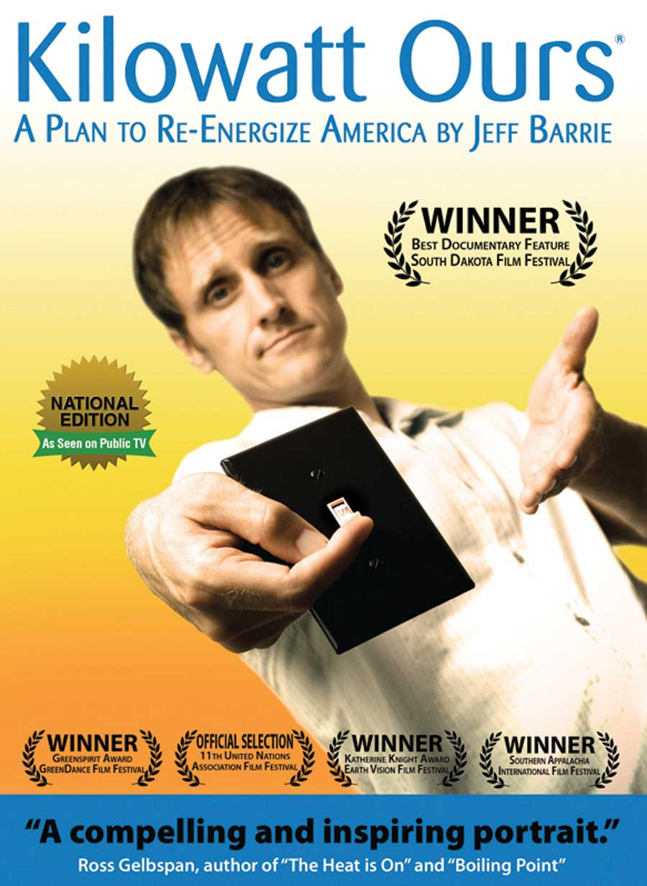

Where does your electricity come from and why does it matter? A new documentary, “Kilowatt Ours: A Plan to Re-energize America,” explores these questions and helps viewers understand the larger context of our decisions about electricity.
The documentary follows the efforts of one couple, Jeff and Heather Barrie, as they successfully cut their electricity use in half, use the savings to buy green power, and explain to viewers how they can do the same.
Along the way, this documentary takes a close look at the problems caused by generating electricity from coal and nuclear power, including climate change, widespread pollution and serious health risks. It visits mountaintop coal removal sites in Appalachia, and a community devastated by cancer associated with uranium mining. It also features lots of solutions: schools powered by geothermal energy, solar homes, farms powered by wind, and many more.
You can learn more about this movie, now available on DVD, at Kilowattours.org.
|
 KILOWATTOURS.ORG Learn how to be more energy-efficient, and why it’s important. |
|
|